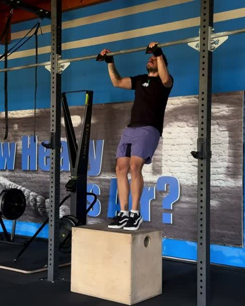
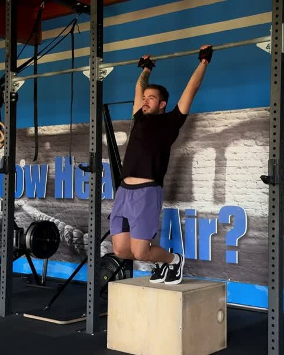
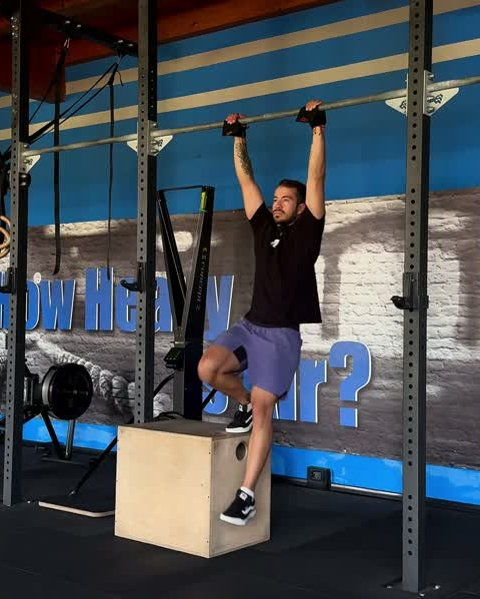
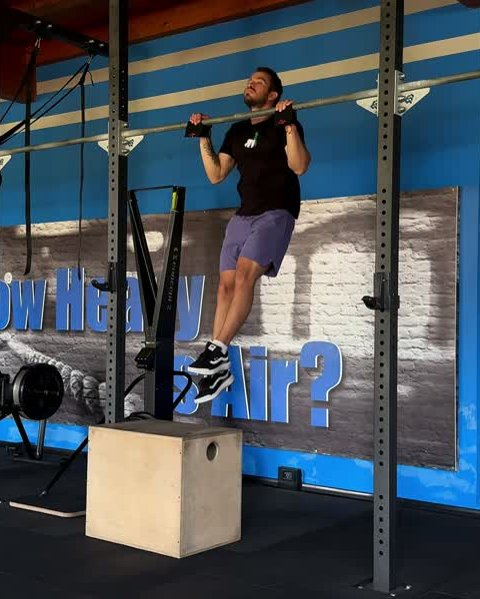
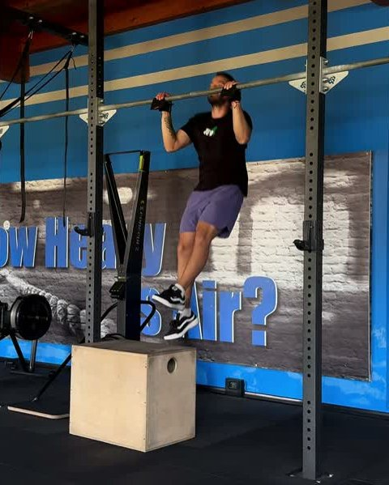
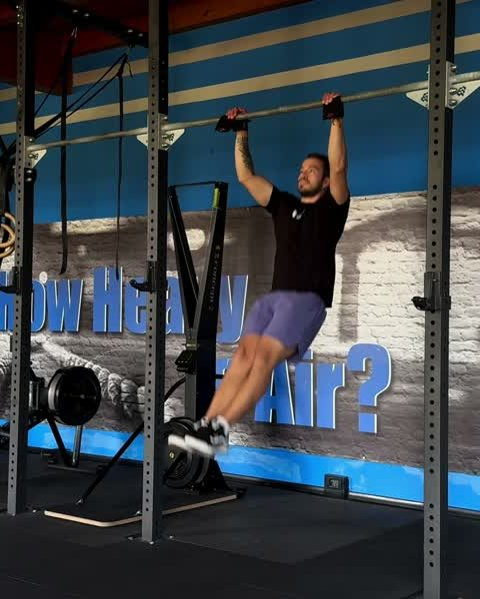
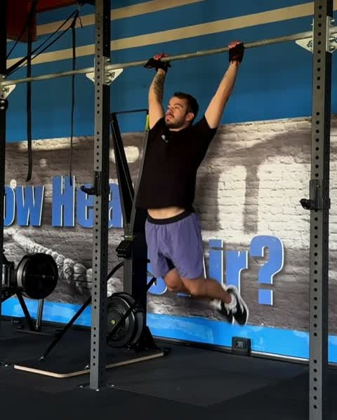
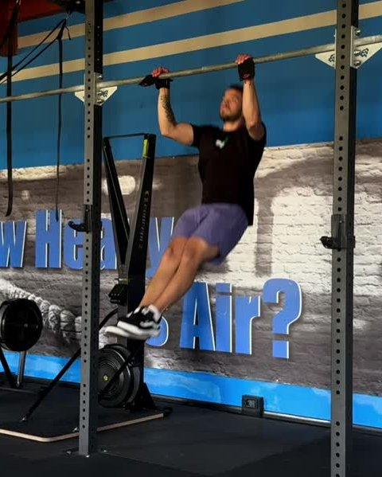

Guida gratuita
Kipping Pull Up:
da dove parti
Nove test per trovare il tuo gradino. Tre esercizi per salirlo.
Filipe Ramos · coach di ginnastica · @coachfiliperamos
Scarica il PDFIl kip ce l'hai già. Quello che manca è la tirata sotto, e la tirata si costruisce togliendo l'aiuto un pezzo alla volta.
Si parte con tutti e due i piedi su un box, poi uno solo, poi niente. Senza box, il test diventa quanta parte della tirata è tua: un quarto, metà, tre quarti, e alla fine tutta. Questa è la scala che uso con i miei atleti, la stessa del programma First Kipping Pull Up dell'app FAR Training.
1. Il test: trova il tuo gradino
Fai i test in ordine, riposando quanto ti serve tra uno e l'altro. Ti fermi al primo che non passi: quello è il tuo gradino. Il box va alto quanto basta per passare il mento sopra la sbarra senza saltare.
-

1Two Leg Kipping Jumping Pull Up + Arch + Hollow
10 ripetizioni singole. Due piedi sul box. Ogni ripetizione parte da ferma.
-

2Two Leg Box Jumping Kipping Pull Up
5 ripetizioni di fila. Senza perdere il ritmo né il disegno del movimento.
-

3One Leg Box Kipping Pull Up + Arch
2 serie da 5, 20" di recupero. Un piede sul box, cambi gamba a ogni serie. Il calcio va insieme alla tirata.
-

4One Leg Box Kipping Pull Up + Arch + Hollow
2 serie da 5, 20" di recupero. Cambi gamba a ogni serie, senza perdere la posizione.
-

5One Leg Box Kipping Pull Up
2 serie da 5, 20" di recupero. Ripetizioni di fila, cambi gamba a ogni serie.
-

61/4 Kipping Pull Up
3 ripetizioni di fila. Senza box. Conta legarle, non farne una.
-

7Half Kipping Pull Up
3 ripetizioni di fila. Metà della tirata, ripetizioni legate.
-

83/4 Kipping Pull Up
3 ripetizioni di fila. Tre quarti della tirata, ripetizioni legate.
-
 9
9Kipping Pull Up
3 ripetizioni di fila. Mento sopra la sbarra in tutte e tre.
Li passi tutti e nove? Il kipping pull up ce l'hai. Adesso si tratta di allungare le serie.
2. Cosa allenare sul tuo gradino
Tre esercizi per gradino: il kip, il passo della scala su cui sei e una negativa per la forza sotto. Sono le dosi con cui si parte nell'app. Il box scende un po' a ogni sessione. Quando il lavoro diventa facile, rifai il test del tuo gradino.
Gradino 1 Non passi il test 1
| Esercizio | Dose | Recupero |
|---|---|---|
| Two Leg Box Kipping | 3 × 10 | 45" |
| Two Leg Kipping Jumping Pull Up + Arch | 1 × 15 | - |
| Pull Up Negative | 3 × 3 | 2' |
Gradino 2 Non passi il test 2
| Esercizio | Dose | Recupero |
|---|---|---|
| Two Leg Box Kipping | 3 × 10 | 45" |
| Two Leg Kipping Jumping Pull Up + Arch + Hollow | 1 × 15 | - |
| Pull Up Negative | 3 × 5 | 2' |
Gradino 3 Non passi il test 3
| Esercizio | Dose | Recupero |
|---|---|---|
| One Leg Box Kipping | 3 × 10 | 45" |
| Two Leg Box Jumping Kipping Pull Up | 1 × 15 | - |
| Pull Up Negative | 3 × 3 | 2' |
Gradino 4 Non passi il test 4
| Esercizio | Dose | Recupero |
|---|---|---|
| One Leg Box Kipping | 3 × 10 | 45" |
| One Leg Box Kipping Pull Up + Arch | 2 × 8 | 20" |
| Pull Up Negative | 3 × 5 | 2' |
Gradino 5 Non passi il test 5
| Esercizio | Dose | Recupero |
|---|---|---|
| One Leg Box Kipping | 3 × 10 | 45" |
| One Leg Box Kipping Pull Up + Arch + Hollow | 2 × 8 | 20" |
| Pull Up Negative | 3 × 3 | 2' |
Gradino 6 Non passi il test 6
| Esercizio | Dose | Recupero |
|---|---|---|
| One Leg Box Kipping | 3 × 10 | 45" |
| One Leg Box Kipping Pull Up | 2 × 8 | 20" |
| Pull Up Negative | 3 × 5 | 2' |
Gradino 7 Non passi il test 7
| Esercizio | Dose | Recupero |
|---|---|---|
| Explosive Kipping | 3 × 10 | 45" |
| 1/4 Kipping Pull Up | 5 × 2 | 1' |
| Pull Up Negative | 3 × 3 | 2' |
Gradino 8 Non passi il test 8
| Esercizio | Dose | Recupero |
|---|---|---|
| Explosive Kipping | 3 × 10 | 45" |
| Half Kipping Pull Up | 5 × 2 | 1' |
| Pull Up Negative | 3 × 5 | 2' |
Gradino 9 Non passi il test 9
| Esercizio | Dose | Recupero |
|---|---|---|
| Explosive Kipping | 3 × 10 | 45" |
| 3/4 Kipping Pull Up | 5 × 2 | 1' |
| Pull Up Negative | 3 × 3 | 2' |
Il programma completo
Nell'app FAR Training ogni gradino è una fase intera: quattro sessioni, la progressione delle dosi giorno per giorno, il video di ogni esercizio e il test di fase alla fine. Il programma First Kipping Pull Up arriva sull'app: segui @fartraining per sapere quando esce.
Non sai se hai passato un test? Mandami il video in DM su @coachfiliperamos e ti dico da che gradino partire.
Apri @coachfiliperamos